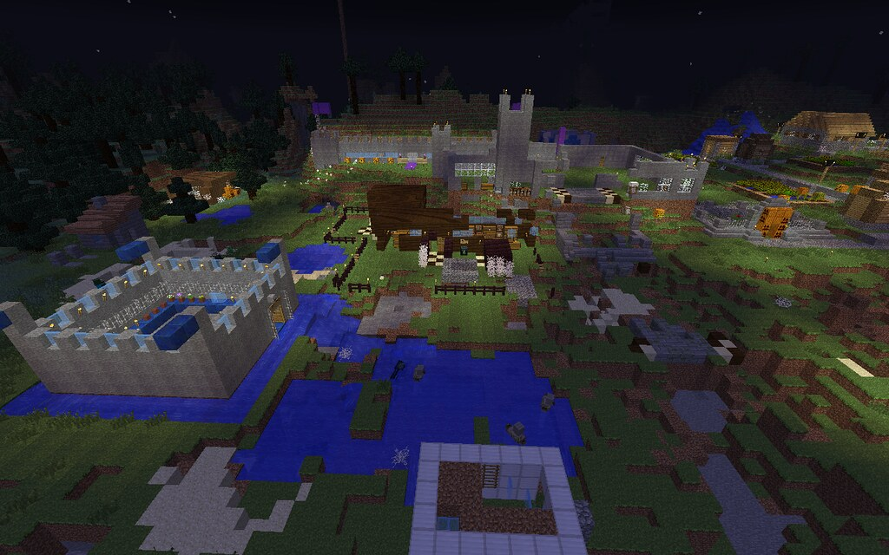

Minecraft is the most nostalgic and well-known video game on the list. It is the first video game I ever really played. I first began playing Minecraft on Minecraft Pocket Edition, on mobile, with my cousins and siblings. This turned to Minecraft on the PS3, and then to Minecraft Java Edition on the PC.
Federico - Flickr - CC BY-NC-SA 2.0
Minecraft is a video game that's all about exploring, building, surviving, fighting mobs, and playing with others. It is where you get to be creative and connect with a bunch of friends. Players may also join multiplayer servers where they can play minigames with other online players.
I remember going home everyday after school just to hop onto my computer and play Minecraft on public servers like Hypixel. Servers offer a large variety of minigames. I would often play minigames with my friends. There are also personal servers called Realms. Realms allow players to safely play online with only the friends they wish to play with. In my friend's realm, we would often build our own world or play minigames.
Wesley Fryer - Flickr CC BY 2.0